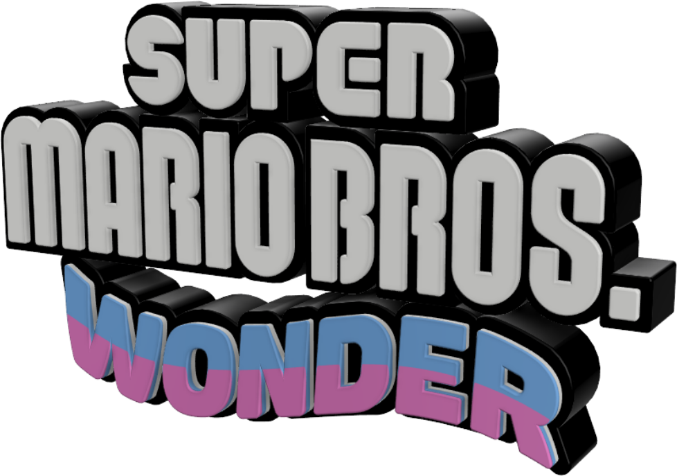

¡Por fin! El juego Super Mario Bros.™ Wonder para la consola Nintendo Switch™ ya está disponible.
Mario y sus amigos fueron invitados a visitar el pintoresco Reino Flor (que queda muy cerca del Reino Champiñón). Y por supuesto, Bowser decide hacer de las suyas y les arruina el día a todos al transformarse en un inmenso castillo volador. Incluso tratándose de él, esto suena un poco excesivo...
Mientras te aventuras a través del Reino Flor, realizarás movimientos acrobáticos en escenarios de plataforma llenos de sorpresas. También puedes disfrutar el juego completo con tres amigos más a través del modo cooperativo local* o en línea** para ayudarse mutuamente.
Hay muchísimo de que hablar, ¡así que enfoquémonos primero en los detalles principales!